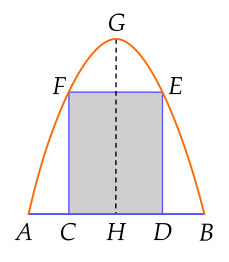
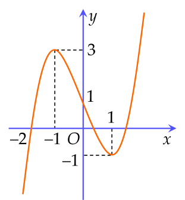
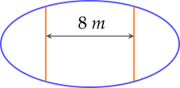
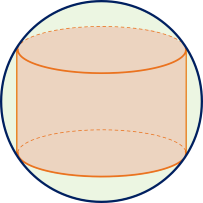

Câu 3. Hình họcKhông vẽ hình
Phần I — Trắc nghiệm chọn một phương án
0,25 điểm
Cho $\overrightarrow{AB}=(5;\,-3;\,2) , \overrightarrow{AC}=(4;\,2;\,1)$ . Tọa độ của $\overrightarrow{a}=2\overrightarrow{AB}+\dfrac{1}{2}\overrightarrow{AC}$ là
Câu 12. Đại số
Phần I — Trắc nghiệm chọn một phương án
0,25 điểm
Mỗi ngày bác Hương đều đi bộ để rèn luyện sức khoẻ. Quãng đường đi bộ mỗi ngày (đơn vị: km) của bác Hương trong $20$ ngày được thống kê lại ở bảng sau:
Quãng đường (km) | Số ngày
$[2,7 ; 3)$ | $3$
$[3 ; 3,3)$ | $6$
$[3,3;3,6)$ | $5$
$[3,6;3,9)$ | $4$
$[3,9;4,2)$ | $2$
Khoảng tứ phân vị của mẫu số liệu ghép nhóm là
Câu 13. Hình họcCó vẽ hình
Phần II — Trắc nghiệm đúng hoặc sai
1 điểm
Bạn An muốn dùng tấm bìa hình chữ nhật có chiều rộng $3$ dm, chiều dài $5$ dm để làm một chiếc hộp không nắp, bằng cách cắt bỏ đi $4$ hình vuông nhỏ có cạnh bằng $x$ dm ở bốn góc của tấm bìa như hình vẽ.(Nhấp vào ô màu vàng để chọn đúng / sai)
Mỗi ý a), b), c)… là một phát biểu độc lập: nhấp vào ô để chọn Đúng/Sai,
0,25 điểm mỗi ý.
Câu 14. Hình họcKhông vẽ hình
Phần II — Trắc nghiệm đúng hoặc sai
1 điểm
Trong không gian $Oxyz$ , cho mặt cầu $(S)$ có đường kính $AB$ với tọa độ các điểm $A(1;2;-4)$ , $B(3;-2;0)$ và mặt cầu $(S'): \, x^2 + y^2 + z^2 - 2x+4y-6z+5=0$ .
(Nhấp vào ô màu vàng để chọn đúng / sai)
Mỗi ý a), b), c)… là một phát biểu độc lập: nhấp vào ô để chọn Đúng/Sai,
0,25 điểm mỗi ý.
Câu 15. Hình họcCó vẽ hình
Phần II — Trắc nghiệm đúng hoặc sai
1 điểm
Một cái cổng có dạng parabol như hình vẽ. Chiều cao $GH=4$ m, chiều rộng $AB=4$ m, $AC=BD=0,9$ m.

Người ta làm hai cánh cổng khi đóng lại là hình chữ nhật $CDEF$ tô đậm với giá $1\,200\,000$ đồng/m ² , phần còn lại làm khung hoa sắt với giá $900\,000$ đồng/m ² .
(Nhấp vào ô màu vàng để chọn đúng / sai)
Mỗi ý a), b), c)… là một phát biểu độc lập: nhấp vào ô để chọn Đúng/Sai,
0,25 điểm mỗi ý.
Câu 16. Đại số
Phần II — Trắc nghiệm đúng hoặc sai
1 điểm
Ba vận động viên bóng rổ thi ném bóng trúng rổ, xác suất để vận động viên thứ nhất, thứ hai và thứ ba ném bóng trúng rổ lần lượt là $x; \, 0,8; \, y$ với $x\lt y$ .
(Nhấp vào ô màu vàng để chọn đúng / sai)
Mỗi ý a), b), c)… là một phát biểu độc lập: nhấp vào ô để chọn Đúng/Sai,
0,25 điểm mỗi ý.
Câu 17. Đại số
Phần III — Trắc nghiệm trả lời ngắn
0,5 điểm
Trong không gian $Oxyz$ , mặt phẳng $(Oyz)$ là mặt phẳng nằm ngang. Một đường ống nước thẳng đi qua hai điểm $A(-1;1;2 ), \, B(2;1;3)$ . Đường ống nước nói trên nghiêng bao nhiêu độ so với mặt phẳng nằm ngang? ( đơn vị độ, làm tròn đến hàng đơn vị ).
Trả lời ngắn — gõ kết quả, kèm đơn vị nếu đề hỏi đơn vị.
Câu 18. Đại số
Phần III — Trắc nghiệm trả lời ngắn
0,5 điểm
Cho hàm số $y=f(x)$ . Biết $y=f'(x)$ là hàm số bậc ba, có đồ thị như hình vẽ:

Có bao nhiêu giá trị nguyên $m∈ \left[ -10;10 \right]$ để hàm số $g\left(x \right)=f\left(x \right)+mx+2\,\,024$ có đúng một cực trị?
Trả lời ngắn — gõ kết quả, kèm đơn vị nếu đề hỏi đơn vị.
Câu 19. Hình họcCó vẽ hình
Phần III — Trắc nghiệm trả lời ngắn
0,5 điểm
Ông Toàn có một mảnh đất phẳng hình elip có độ dài trục lớn bằng $16$ m và độ dài trục nhỏ là $10$ m. Ông để một dải đất rộng $8$ m làm sân, lối đi và dải đất này nhận trục bé của elip làm trục đối xứng, đồng thời ông muốn trồng hoa hai bên mảnh đất còn lại. Biết kinh phí để trồng hoa là $100\,000$ đồng/m ² .

Ông Toàn cần bao nhiêu triệu đồng để trồng hoa trên phần đất đó (kết quả được làm tròn đến hàng trăm)?
Trả lời ngắn — gõ kết quả, kèm đơn vị nếu đề hỏi đơn vị.
Câu 20. Hình họcKhông vẽ hình
Phần III — Trắc nghiệm trả lời ngắn
0,5 điểm
Trong không gian $Oxyz$ cho hai đường thẳng $d_1:\,\dfrac{x}{-1}=\dfrac{y+1}{2}=\dfrac{z}{2}$ ; $d_2:\,\left\{ \begin{aligned}&x=2~t \\&y=1 \\&z=1-t \\ \end{aligned} \right.$ . Gọi $\varphi$ là góc giữa hai đường thẳng ${{d}_{1}},\,{{d}_{2}}$ . Giá trị $\cos\varphi$ có dạng $\dfrac{a\sqrt{c}}{b}$ . Tính giá trị biểu thức $P=b-3a+c$ .
Trả lời ngắn — gõ kết quả, kèm đơn vị nếu đề hỏi đơn vị.
Câu 21. Hình họcCó vẽ hình
Phần III — Trắc nghiệm trả lời ngắn
0,5 điểm
Một khối cầu có bán kính là $6$ dm, người ta cắt bỏ hai phần của khối cầu bằng hai mặt phẳng song song cùng vuông góc đường kính và cách tâm một khoảng $3$ dm để làm một chiếc lu đựng nước (như hình vẽ).

Thể tích mà chiếc lu chứa được là bao nhiêu dm ³ (làm tròn đến hàng đơn vị)?
Trả lời ngắn — gõ kết quả, kèm đơn vị nếu đề hỏi đơn vị.
Câu 22. Đại số
Phần III — Trắc nghiệm trả lời ngắn
0,5 điểm
Trong một đợt kiểm tra sức khoẻ, có một loại bệnh X mà tỉ lệ người mắc bệnh là $0,2$ và một loại xét nghiệm Y mà ai mắc bệnh X khi xét nghiệm Y cũng có phản ứng dương tính. Tuy nhiên, có $6$ những người không bị bệnh X lại có phản ứng dương tính với xét nghiệm Y. Chọn ngẫu nhiên $1$ người trong đợt kiểm tra sức khoẻ đó. Giả sử người đó có phản ứng dương tính với xét nghiệm Y. Xác suất người đó bị mắc bệnh X là bao nhiêu ( làm tròn kết quả đến hàng phần trăm )?
Trả lời : ☐
Điền số — gõ kết quả em tính được vào ô.